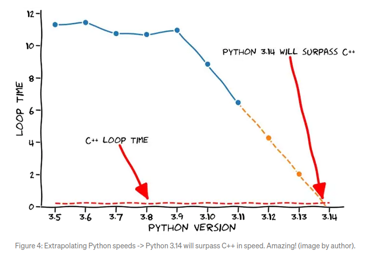

Async Python modules in Rust
Ondřej Vostal (ChainKeepers, CEO & Founder, 0xkron)

agenda
about

performance
websockets
ruws - Websockets in Rust
about
we firmly belive that open and programable finance is going to advance the world
we improve prices, and stabilize DeFi
we have a strong investor Miton C (Ondřej Raška)
we use a lot of Rust and Python
looking for extraordinary talent to join our ranks
Python speeds up
Numba can help with computations [1]
Abstraction is costly
In [9]: class Test:
...: def call(self):
...: pass
...: def decall(self):
...: self.call()
In [10]: test = Test()
In [11]: %timeit pass
5.76 ns +/- 0.041 ns per loop
In [13]: %timeit test.call()
53.5 ns +/- 1.87 ns per loop
In [17]: %timeit test.decall()
84.1 ns +/- 0.692 ns per loop
GIL
python reference counting locks GIL [2]
=> GIL is locked practically all the time
CPU-bound tasks dont benefit from threads
multi-processing is only practical on large scale
Rust
a kind of modern C++
can be quite efficient [3], [4]
enforces memory safety
pleasant, once you stop fighting it
websockets
why
how
why
little chunks
a lot of concurrent input streams
eventually a global decision
rapid prototyping
no speed compromise
how
parse and aggregate in Rust
notify Python through asyncio
ruws
Python
PyO3 [7]
Tokio [8]
Python
make a Rust stream providing an async iterator
run in an asyncio loop
consume - measure latencies
main.py
consume data in an async iterator
async def main_loop(duration):
stream = Stream("ws://localhost:49158") # in Rust
queue = stream.queue
stream.run(duration)
async for data in stream:
ex_time = data["ex_time"]
ru_time = data["ru_time"]
loc_time = time()
print(...)
queue.task_done() # it can be done
libruws.pyi
Rust communicates using an asyncio.Queue
from asyncio import Queue
class PyStream:
url: str
queue: Queue
def __init__(self, url: str) -> None:
...
def run(self, duration: int) -> None:
...
ruws.py
wrap it to provide Pythonic feel
from libruws import PyStream
class Stream:
def __init__(self, *args, **kwargs):
self.stream = PyStream(*args, **kwargs)
self.queue = self.stream.queue
def __getattr__(self, key):
return getattr(self.stream, key)
async def __aiter__(self):
while True:
data = await self.queue.get()
if isinstance(data, Exception):
raise data
yield data
Rust
async WS connection
feeding data to Python
Python bindings
shared library holding the code
Cargo.toml
tell Cargo to build a shared library with "cdynlib"
[package]
name = "ruws"
version = "1.0.0"
authors = ["Ondrej Vostal <ondrej@chainkeepers.io>"]
edition = "2018"
[lib]
name = "ruws"
# "cdylib" creates a shared library for Python
crate-type = ["cdylib"]
lib.rs/libruws
describe bindings
/*
The name must match name of module.
Or you can use the #[pyo3(name=...)] macro
*/
#[pymodule]
#[pyo3(name = "libruws")]
fn libruws(py: Python, m: &PyModule) -> PyResult<()> {
/* py: Python - is the GIL lock held */
pyo3_log::init();
m.add_class::<PyStream>()?;
/* exceptions must be created in Rust first, see github code */
m.add("StreamEnded", py.get_type::<StreamEnded>())?;
m.add("StreamError", py.get_type::<StreamError>())?;
Ok(())
}
lib.rs/main
our workhorse is a single-threaded Rust async loop
#[tokio::main(flavor = "current_thread")]
async fn main() {
simple_logger::init_with_level(Level::Info)
.expect("Wanna log, but it's a chicken-egg problem");
info!("starting up");
let url = "ws://localhost:49158";
tokio::spawn(async move { connect(url).await; });
let args: Vec<String> = env::args().collect();
let duration_secs: u64 = args[1].parse().unwrap();
tokio::time::sleep(Duration::from_secs(duration_secs)).await;
info!("ended");
}
lib.rs/connect
connect and subscribe by sending "subscribe"
async fn connect(url: &str) {
let url = url::Url::parse(url).unwrap();
let (mut con, resp) =
tokio_tungstenite::connect_async(url).await.unwrap();
info!("resp: {:?}", resp);
match con.send("subscribe").await {
Ok(_) => (),
Err(err) => {
error!("Cannot subscribe because of an error: {:?}", err);
return;
}
}
...
}
lib.rs/connect
consume and parse data - beware of serde_json
...
while let Some(item) = con.next().await {
let data = match item {
Ok(Message::Text(text)) => match json::parse(&text) {
Ok(data) => data,
Err(err) => { warn!("{}", err); continue; }
},
err => {
error!("Error when receiving a message: {:?}", err);
break;
}
};
...
lib.rs/connect
send data to the Python asyncio.Queue [9]
...
let ex_time = data["data"]["time"].as_f64().unwrap_or(0.);
let ru_time = get_timestamp();
Python::with_gil(|py| {
let data_dict = [
("ex_time", ex_time),
("ru_time", ru_time)
].into_py_dict(py);
queue.push_py(py, data_dict);
});
...
lib.rs/PyAsyncQueue
Rust view of the asyncio.Queue
pub fn new() -> PyAsyncQueue {
Python::with_gil(|py| {
py.run("from asyncio import Queue", None, None).unwrap();
let res = py.eval("Queue()", None, None).unwrap();
let queue = res.into_py(py);
let loop_ = get_running_loop();
PyAsyncQueue {
put_nowait:
queue.getattr(py, PyString::new(py, "put_nowait")).unwrap(),
call_soon_threadsafe: ...,
queue: queue,
}
})
}
lib.rs/PyAsyncQueue
Rust view of the asyncio.Queue
...
pub fn push_py<T: ToPyObject>(&self, py: Python, value: T) {
self.call_soon_threadsafe.call1(
py,
(&self.put_nowait, value.to_object(py))
).unwrap();
}
...
Benchmark
run a server feeding data at 10ms to subscribers
consume in a pure Python code (aiohttp, orjson)
consume in a pure Rust code (json-rust [9])
consume in Python using ruws (json-rust)
measure time from creation to consumption
large data
data with a 300k-['A'] array
py ru pyru
count 29168.000000 29168.000000 29168.000000
mean 72.002851 12.283540 12.302531
std 210.516437 2.029103 2.041994
1% 12.971799 8.371358 8.365791
50% 18.723249 11.772752 11.778116
99% 1229.027789 19.446271 19.560320
Python is 6x slower than Rust
ruws slower than rust by 20us-ish, 1us in median
small data
data with a 5-['A'] array
py ru pyru
count 45589.000000 45589.000000 45589.000000
mean 0.487006 0.311788 0.312021
std 0.124112 0.119379 0.099602
1% 0.147343 0.087738 0.090837
50% 0.520229 0.328779 0.329494
99% 0.682173 0.449896 0.453949
Python is just 60% slower than Rust
ruws slower than rust by 1us-ish
Speed meets prototyping
this approach can speed up Python greatly
Python → Rust comms overhead is tiny
do not give up Python for rapid prototyping
Simpler is faster